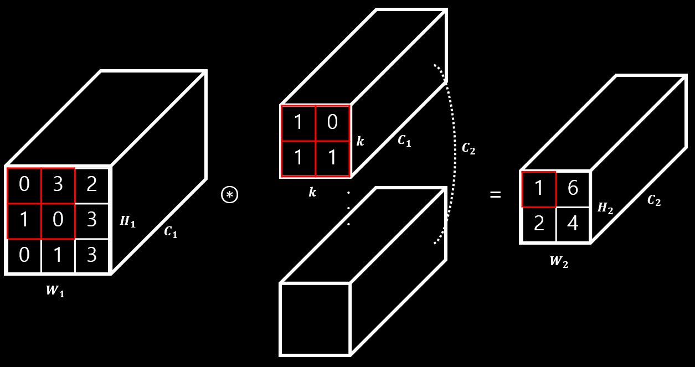
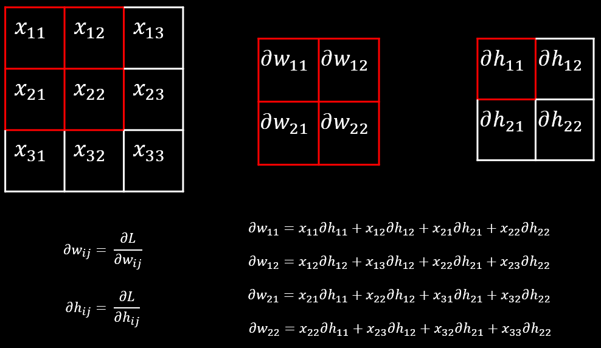

Convolutional Layer 란?
Convolution은 합성곱으로 2가지 연산을 사용합니다.
- 각 원소끼리 곱합니다. (element wise multiplication)
- 각 원소를 더합니다.
이해를 돕기위해 그림으로 살펴보겠습니다. 아래 그림과 같이 각 원소를 곱하고 합한 값을 활성화 함수를 통과하여 최종적으로 값을 만듭니다.(아래 그림은 활성화 함수를 생략한 그림입니다.)

Convolutional Layer는 Feature Maps과 Filters의 Convolution 연산을 통해 그 다음 Feature Maps을 만들어 내는 작업을 반복합니다. 여기서 filters가 학습 파라미터 입니다.
입력 이미지 -> Filters(kernel) -> Feature Maps(Channels) -> Filters(kernel) -> Feature Maps(Channels) -> ...
Convolutional Layer는 설정 가능한 파라미터가 있습니다.
stride: filter가 움직이는 간격입니다.padding: Feature Map의 테두리 부분의 정보 손실을 줄이기 위해서 테두리를 특정한 값(보통 0)으로 채워 넣는 방법입니다. padding은 몇개의 테두리를 채울지에 대한 값입니다.filter의 수(가중치의 수) :
Convolutional Layer 역전파는 쉽게 표현하는 경우 아래 그림과 같습니다.

output을 계산하기 위해서 각자의 id를 가지고 있는 weight가 사용된 곳을 보시면 이해하기 쉽습니다. 예를 들어서 은 를 연산하는데 각각 사용되었기 때문에 이들의 미분 값의 합으로 최종적으로 업데이트 할 기울기를 만듭니다. 역전파는 Layer 따로 따로 간단하게 어떻게 동작하는지를 전부 살펴보고 마지막에 보면 더 쉬운거 같습니다.
convolutional_layer.c
forward_convolutional_layer
void forward_convolutional_layer(convolutional_layer l, network net)
{
int i, j;
fill_cpu(l.outputs*l.batch, 0, l.output, 1); /// output을 0으로 초기화
if(l.xnor){
binarize_weights(l.weights, l.n, l.c/l.groups*l.size*l.size, l.binary_weights);
swap_binary(&l);
binarize_cpu(net.input, l.c*l.h*l.w*l.batch, l.binary_input);
net.input = l.binary_input;
}
int m = l.n/l.groups; /// filter 개수
int k = l.size*l.size*l.c/l.groups; /// filter 크기
int n = l.out_w*l.out_h; /// output feature map 크기
for(i = 0; i < l.batch; ++i){
for(j = 0; j < l.groups; ++j){
float *a = l.weights + j*l.nweights/l.groups; /// 학습 시작 포인터
float *b = net.workspace;
float *c = l.output + (i*l.groups + j)*n*m; /// output 시작 포인터
float *im = net.input + (i*l.groups + j)*l.c/l.groups*l.h*l.w; /// input 시작 포인터
if (l.size == 1) {
b = im;
} else {
im2col_cpu(im, l.c/l.groups, l.h, l.w, l.size, l.stride, l.pad, b); /// 이미지를 columns로 변환
}
gemm(0,0,m,n,k,1,a,k,b,n,1,c,n); /// 컨볼루션 연산
}
}
if(l.batch_normalize){
forward_batchnorm_layer(l, net);
} else {
add_bias(l.output, l.biases, l.batch, l.n, l.out_h*l.out_w);
}
activate_array(l.output, l.outputs*l.batch, l.activation);
if(l.binary || l.xnor) swap_binary(&l);
}
forward
- convolution 연산
- batch normalization(no bias) or bias
- activation function
backward_convolutional_layer
void backward_convolutional_layer(convolutional_layer l, network net)
{
int i, j;
int m = l.n/l.groups; /// filter 개수
int k = l.size*l.size*l.c/l.groups; /// filter 크기
int n = l.out_w*l.out_h; /// output feature map 크기
gradient_array(l.output, l.outputs*l.batch, l.activation, l.delta); /// activation function 역전파
if(l.batch_normalize){
backward_batchnorm_layer(l, net); /// batch normalize 역전파
} else {
backward_bias(l.bias_updates, l.delta, l.batch, l.n, k); /// bias 역전파
}
for(i = 0; i < l.batch; ++i){
for(j = 0; j < l.groups; ++j){
float *a = l.delta + (i*l.groups + j)*m*k; /// gradient 포인터 이동
float *b = net.workspace;
float *c = l.weight_updates + j*l.nweights/l.groups; /// update 포인터 이동
float *im = net.input + (i*l.groups + j)*l.c/l.groups*l.h*l.w; /// 이미지 포인터
float *imd = net.delta + (i*l.groups + j)*l.c/l.groups*l.h*l.w;
if(l.size == 1){
b = im;
} else {
im2col_cpu(im, l.c/l.groups, l.h, l.w,
l.size, l.stride, l.pad, b); /// 이미지를 columns로 변환
}
gemm(0,1,m,n,k,1,a,k,b,k,1,c,n); /// b(image)를 전치행렬로 컨볼루션 연산
if (net.delta) {
a = l.weights + j*l.nweights/l.groups; /// weight 포인터 이동
b = l.delta + (i*l.groups + j)*m*k; /// gradient 포인터 이동
c = net.workspace;
if (l.size == 1) {
c = imd;
}
gemm(1,0,n,k,m,1,a,n,b,k,0,c,k); /// a(weight)를 전치행렬로 컨볼루션 연산
if (l.size != 1) {
col2im_cpu(net.workspace, l.c/l.groups, l.h, l.w, l.size, l.stride, l.pad, imd); /// columns을 이미지로 변환
}
}
}
}
}
backward
- activation function
- batch normalization(no bias) or bias
- convolution 연산
add_bias
void add_bias(float *output, float *biases, int batch, int n, int size)
{
int i,j,b;
for(b = 0; b < batch; ++b){
for(i = 0; i < n; ++i){
for(j = 0; j < size; ++j){
output[(b*n + i)*size + j] += biases[i];
}
}
}
}
- bias를 더합니다.
scale_bias
void scale_bias(float *output, float *scales, int batch, int n, int size)
{
int i,j,b;
for(b = 0; b < batch; ++b){
for(i = 0; i < n; ++i){
for(j = 0; j < size; ++j){
output[(b*n + i)*size + j] *= scales[i];
}
}
}
}
- bias의 scale을 조절합니다.
backward_bias
void backward_bias(float *bias_updates, float *delta, int batch, int n, int size)
{
int i,b;
for(b = 0; b < batch; ++b){
for(i = 0; i < n; ++i){
bias_updates[i] += sum_array(delta+size*(i+b*n), size);
}
}
}
- bias를 업데이트할 기울기 값을 구합니다.
- bias는 딥러닝 연산에서 더해지는 항이기 때문에 미분을 하는 경우 1이되고 흘러들어온 그래디언트를 업데이트 값으로 사용합니다.